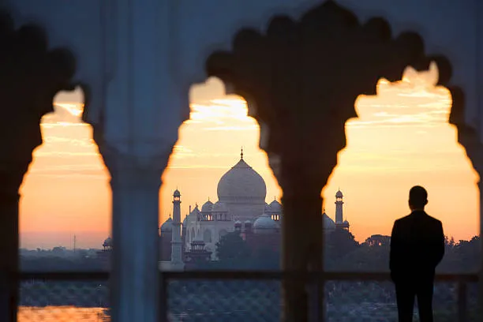
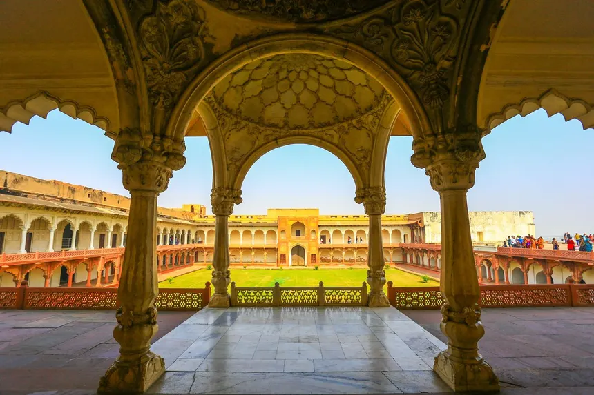
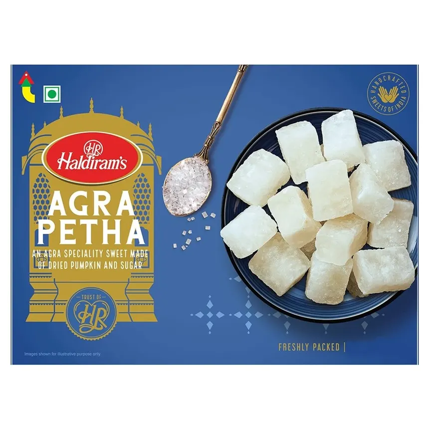
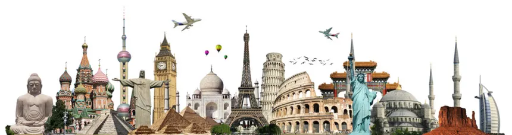

Agra is home to the Taj Mahal, one of the Seven Wonders of the World.
Along with Taj Mahal it has several diffrent monuments that you can visit
in Agra it is one of the best tourist place to spend time at .

The city reflects Mughal heritage through its monuments and traditions.
Beacuse this city was the headquaters of the mughal rule
it contains various mughalai things in it .

Agra is famous for its sweet Petha and Mughlai cuisine.
The Petha is widely famous in all across India mainly
because of Agra itself the 70% of the total made pethat is made in agra itself.

The recommended season is October to March when the weather is pleasant.
because of the good temprature we feel the monumnets
much more as compared to what in heat and cold environment
Always carry water and wear comfortable shoes while exploring monuments.
